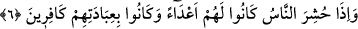

sıfatlarla nitelendirilmeleridir. Halbuki putların hâli bellidir. Bu durum putlarla ve
onlara ibâdet eden müşrik ve putperestlerle alay etmek ve onları aşağılamak içindir.
Nasipsiz âb-ı hayât çeşmesinden geçer de
Yüzünü karanlıklara döndürür.
6. İnsanlar bir araya toplandıkları zaman (müşrikler) onlara (tapındıklarına)
düşman kesilirler ve onlara kulluk ettiklerini inkâr ederler.
“İnsanlar” kıyâmet günü mahşerde “toplandıkları gün, (taptıkları tanrılar) onlara
düşman olurlar.” Onlara zarar verir fayda vermezler “ve onların kendilerine
tapmalarını tanımazlar.” Hâl diliyle yahut sözlü olarak onları tekzib ederler.
“Haşr”, “toplamak” demektir. Kamûs’ta böyledir. Râgıb şöyle demiştir: “Haşr”, “bir
topluluğu karargâhlarından çıkarıp bulundukları mekândan uzaklaştırarak onları savaş
yahut başka bir şeye sürüklemek”tir. Bu ifâde yalnız topluluklar için kullanılır.
Kıyâmete, ba’s ve neşr günü dendiği gibi haşr günü de denmiştir.
“Aksine, onlardan şefâat ve yardım göreceklerini ümid ediyorlardı.”
“Onlardan şefâat ve yardım göreceklerine dâir ümitlerinin aksine…”
Putlar kendilerine duâ ve ibâdet edenlere zarar verir, fayda vermezler.
Putlar onlara duâ ve ibâdet edenleri hâl diliyle yahut sözlü olarak tekzib
etmektedirler. Rivâyet edildiğine göre Allah Teâlâ putları diriltecek, putlar müşriklerin
kendilerine ibâdet etmelerinden kendilerini ibrâ edecekler ve “onlar aslında kendi hevâ
ve heveslerine ibâdet ettiler. Çünkü Allah’a ortak koşmayı kendilerine emreden onların
hevâ ve hevesleridir” diyeceklerdir. Bu âyet şu âyet gibidir: “Artık tanrılarıyla
aralarını açmışızdır, dünyadaki gibi aralarında bir bağ kalmamıştır. Koştukları
ortaklar siz bize tapmıyordunuz demektedirler.” (Yunus, 10/ 28)
Âyette gaflet uykusundan uyanıp, silkinip dirilmeye işâret edilmektedir. Zira kişi
gaflet uykusundan uyanınca Allah’tan başka her şeyin ve herkesin düşman olduğu ortaya
çıkar. İbrâhîm (a.s.) şöyle demiştir: “Onlar benim düşmanımdır. Yalnız âlemlerin
rabbi (benim dostumdur)” (eş-Şuarâ, 26/ 77). İbrâhîm (a.s.) dedi ki: “Ey kavmim ben
sizin (Allah’a) ortak koştuğunuz şeylerden uzağım.” (el-En’âm, 6/78).
Nakledilir ki Bayezîd Bistâmî (k.s.)’nin Hac yolunda bir devesi vardı. Yol azığını ve
eşyasını bu devenin sırtına yüklemişti. Birisi ona: “Biçâre! Bu deveciğin yükü çok fazla
ve bu tam anlamıyla bir zulümdür” dedi. Bâyezid ondan bu sözü işitince: “Ey
Civanmerd! Yükü taşıyan deve değil, iyi bak, hiç devenin üstünde yük var mı?” dedi.